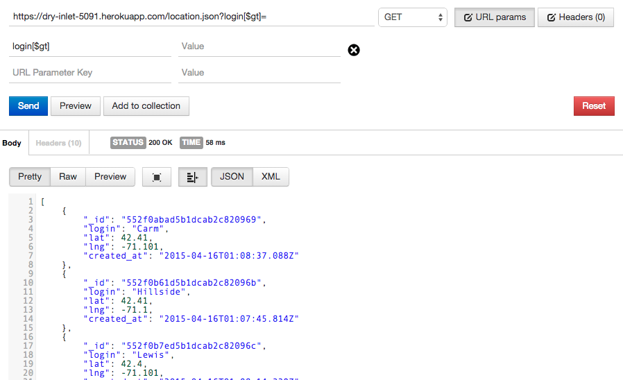

Issues Found
Using POSTman request of the following types were used:
- Issue 1: Input in login name
- Location: "/sendlocation" page, result on "/" page
- Severity: High
Content on page can be modified in way not intended by developer, any application that relies on the database and uses the resulting JSON may also have bad data and thus cause a XSS on their site.
- Description of issue:
Using the POSTMAN utility, a script alert was sent causing an alert popup to be displayed
The POSTMAN request

The result on "/" page
The result on a mapping utility using the server as an API - name is an empty field under current flaw
- Resolution: to prevent XSS from occuring, NEVER TRUST USER INPUT. Convert all characters that are not regular to html characters
- Issue 2: MongoDB Search Code Execution
- Location: "/location.json" page
- Severity: Medium
Requests can be made by altering the field "login" when requesting a specific username. Although many mongo commands are blocked by the express framework used in the server, the [$gt] command is not.
- Description of issue:
Using the POSTMAN utility, the [$gt] term was appended to the login request param causing all data to be returned. This is not the intended developer response, where the location.json only is supposed to return one name.

The POSTMAN request
- Resolution: sanatize requests before parsing, use express utilities to disable commands like this from being available in a user entry. Although here the data shown is not harmful, this could allow access to data that is meant to be private.
- Issue 3: MongoDB Code (Internal Error)
- Location: "/location.json" page
- Severity: High
Using the login field, requests can be made that cause the server to have errors. Because not all fields are checked, the resulting response from mongo may cause an error (due to the code depending on data being returned in a specific fashion - something which is not always invariant as the user may input arguably malicious code).
- Description of issue:
Using the POSTMAN utility, the [$nin] term was appended to the login request param causing all data not matching data in array to be displayed. Because this data is then coverted to an array (which the response may not be), an interal server error as shown below can be found.
The POSTMAN request
- Resolution: rewrite function locations.json to not rely on data being in a specific format - ie the code should not expect that an array is necesarily returned from mongo. Although one could also sanatize the data (and as shown in issue 2, one really should), this error shows another underlying assumption, which need not be assumed. By catching errors using error handling built into javascript, the issue can be resolved. In the code: coll.find({login:login}).toArray, the code must be restructured to catch errors before that command is sent and santatize the login string (login) sent to mongodb. Express manipulates this command with a [$nin] to look for all elements not in the array (ie: any hidden fields, or things that are specifically NOT in the array).